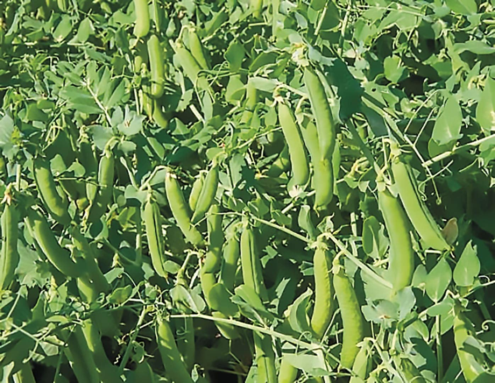
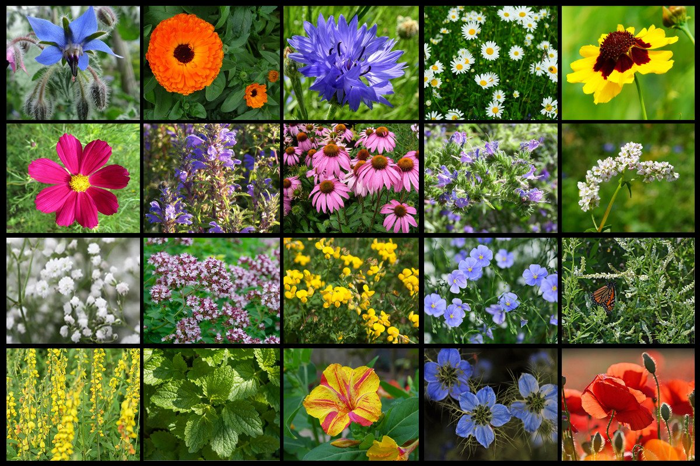

| Zbożowe |
Kukurydza, pszenica, ryż, jęczmień, żyto, pszenżyto, proso, sorgo, owies.
Ziarna o wysokiej zawartości skrobi, są wykorzystywane do celów konsumpcyjnych, pastewnych i przemysłowych.
Najpopularniejszymi produktami przerobu zbóż są mąki, kasze. |
 |
| Oleiste |
Rzepak, rzepik, słonecznik, len oleisty, orzeszki
ziemne, sezam i soja. Uprawiane ze względu na wysoką zawartość tłuszczu.
Wykorzystywane są w gospodarstwach domowych oraz w przemyśle cukierniczym,
piekarniczym, konserwowym i rybnym, a także do produkcji farb i lakierów,
kosmetyków, leków, środków ochrony roślin, produkcji gum i smarowania silników |
 |
| Okopowe (bulwiaste) |
Ziemniaki, buraki, maniok, bataty. Rośliny okopowe gromadzą substancje zapasowe w korzeniu lub
bulwie w postaci wielocukrów, dwucukrów i cukrów prostych. Rośliny te należą do różnych rodzin botanicznych.
Mają duże znaczenie gospodarcze jako źródło pożywienia. |
 |
| Strączkowe |
Soczewica, fasola, groch, ciecierzyca. rośliny z rodziny bobowatych (motylkowatych) o dużych nasionach uprawiane
jako rośliny pastewne, jadalne i dostarczające surowca do przemysłu spożywczego.
Uprawiane są dla nasion, paszy i jako zielony nawóz.
Ponieważ tak jak inne motylkowe współżyją z bakteriami brodawkowymi – wiążą wolny azot. |
 |
| Owoce i warzywa |
Jabłka, gruszki, wiśnie, czereśnie, śliwy, truskawki, cebula,
kapusta, pomidor, marchew, pietruszka, seler, por, ogórek, kalafior. Częściami użytkowymi roślin warzywnych
mogą być całe rośliny lub tylko: liście, owoce, kwiatostany, bulwy, łodygi i korzenie, natomiast roślin owocowych tylko owoc. |
 |
| Miododajne |
Rośliny zaliczane do roślin pszczelarskich lub roślin pożytkowych – rośliny o kwiatach barwnych i
wonnych, kwitnące długo i obficie, które dostarczają pszczołom surowca do produkcji miodu – nektaru (rośliny nektarodajne)
lub rośliny, na których liściach i pędach wytwarzany jest inny surowiec do produkcji miodu. |
 |
| Cukrodajne |
Burak cukrowy, trzcina cukrowa. Rośliny typowo przemysłowe, z których wytwarza się głównie cukier. |
 |